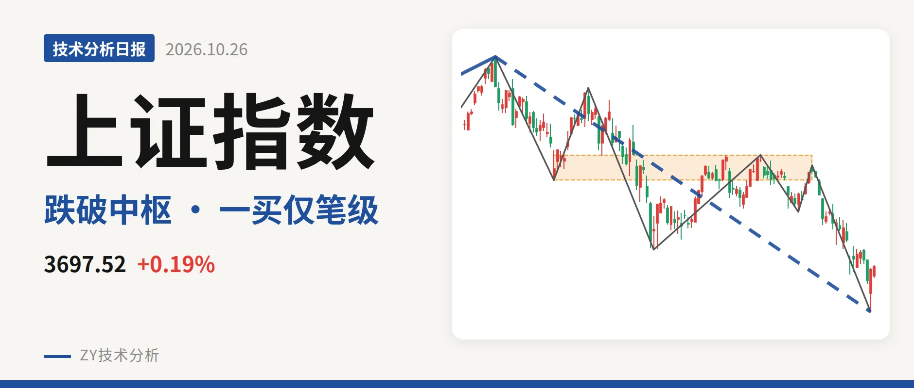
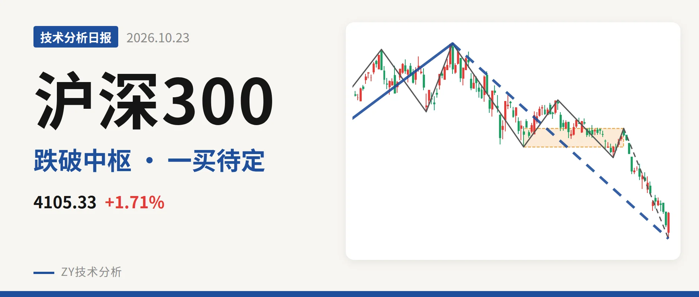
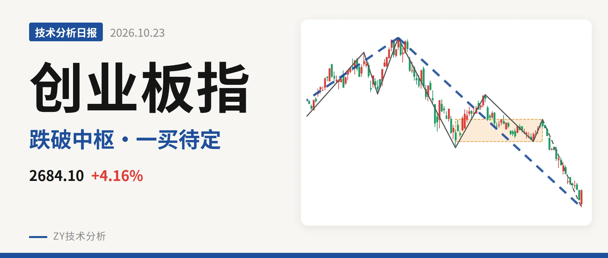

技术分析日报 · 2026-10-26

上证指数 3697.52 +0.19%
跌破中枢下沿，3928点成反抽关键

沪深300 4105.33 +1.71%
跌破4478点下沿，3958点暂成一买

中证500 6814.44 +2.39%
跌破7451点中枢，6440点一买待定

中证2000 2856.27 +1.85%
反弹未成线段，回试2585点

中证红利 5398.82 -0.13%
跌破日线中枢，反抽看5518点

创业板指 2684.10 +4.16%
跌破中枢16.8%，2494点一买待定
⚠️ 本文为基于公开行情数据的缠论技术结构记录，由程序自动计算并生成，仅供学习交流，不构成任何投资建议。市场有风险，投资需谨慎。